기도 편지 · 탄자니아 아루샤 · 2026년 10월
BMTC 2026 · Ministry Manager 과목을 마치며
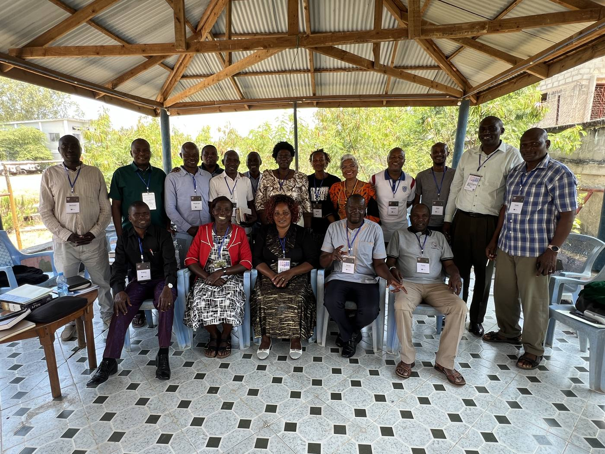
BMTC 2026 참가자들 · 10월 21일
기도해 주신 덕분에 탄자니아 아루샤 BMTC 에서 맡은 Ministry Manager 과목을 마쳤습니다. 케냐 10명, 탄자니아 4명, 우간다 3명, 모두 열일곱 명의 현지 인도자가 세미나 하나를 처음부터 끝까지 자기 폰으로 운영하는 법을 배웠습니다. 학생을 받고, 출석을 부르고, 수강료를 받아 적고, 성적을 넣고, 종강하고, 쓴 경비를 영수증과 함께 적는 일입니다.
이 일을 배우는 이유는 하나입니다. 지금까지 본부와 선교사가 대신 해 오던 기록과 보고를 현지 인도자가 스스로 할 수 있게 되면, 사역이 사람에게 묶이지 않고 그 땅에 남습니다.
또 네가 많은 증인 앞에서 내게 들은 바를 충성된 사람들에게 부탁하라 그들이 또 다른 사람들을 가르칠 수 있으리라디모데후서 2:2
교실 인터넷이 처음엔 9.3Mbps 였습니다. 열일곱 명이 한꺼번에 접속하면 화면이 멈출 속도라, 시내에 나가 기기와 요금제를 바꿨더니 37Mbps 가 나왔습니다. 작은 일이었지만, 수업 내내 인터넷 때문에 멈춘 적이 없었습니다.
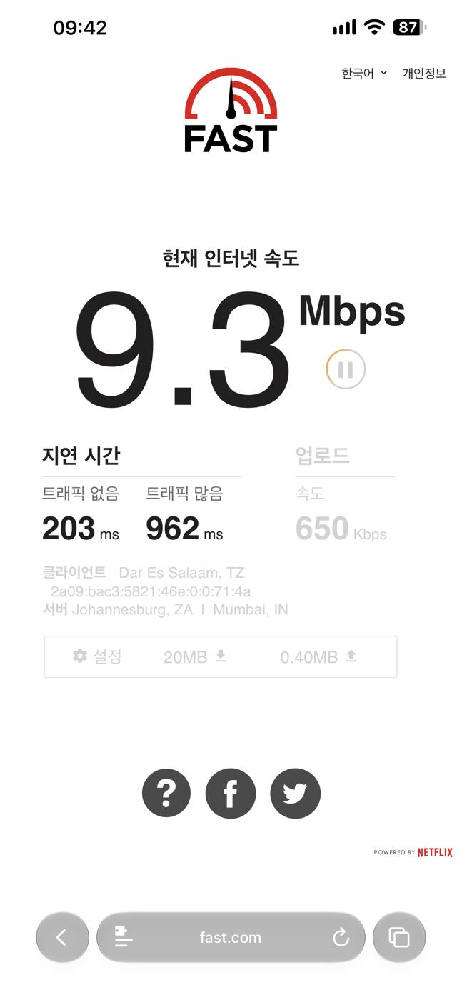
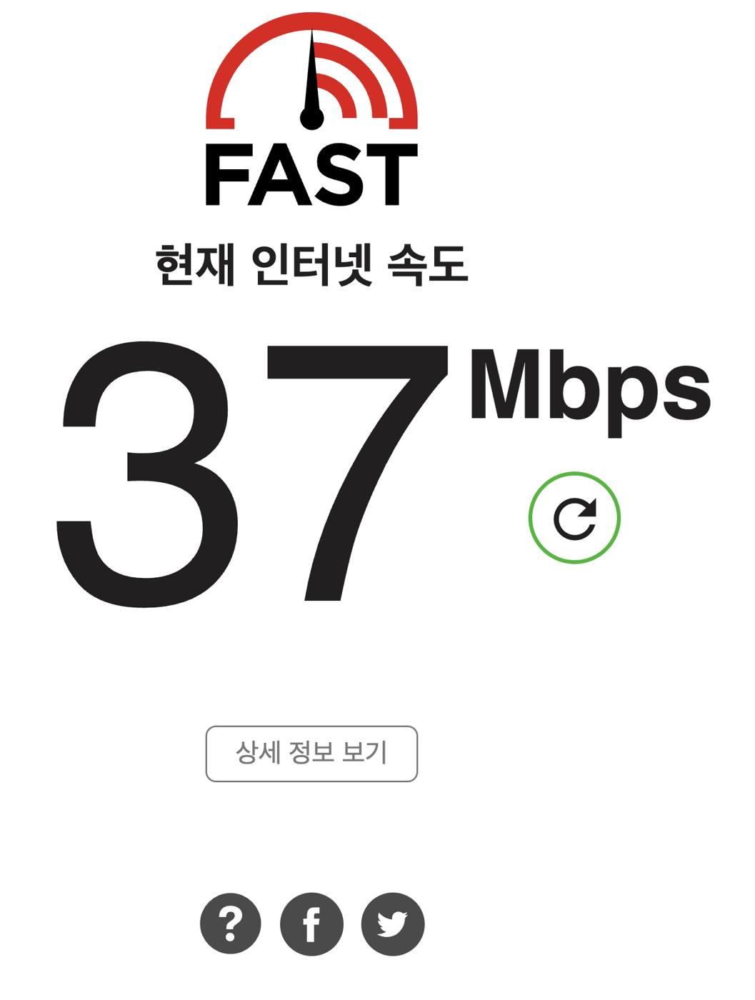
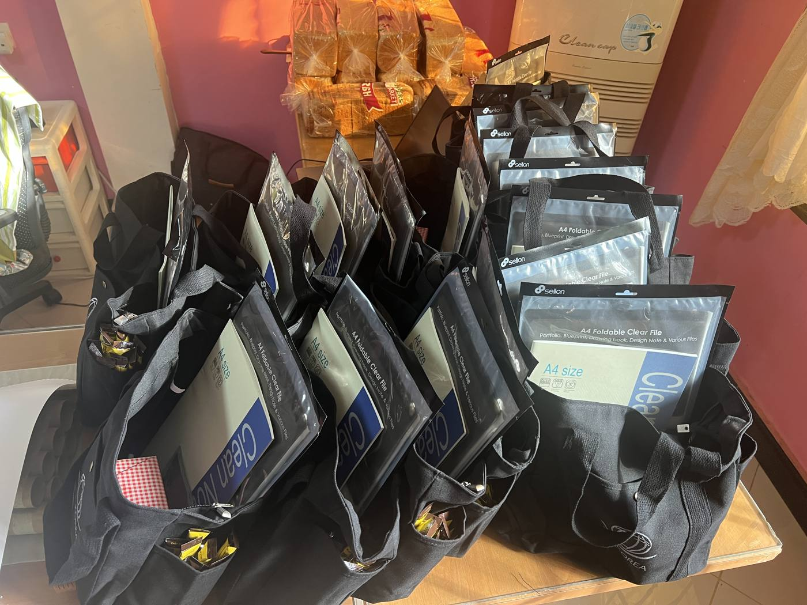
첫 수업 날 전기가 나갔습니다. 화요일 수업을 수요일 오후로 합쳐 다섯 시간을 한 번에 했습니다. 참가자들이 지친 기색 없이 따라와 주었고, 그날 하루에만 연습 카드 273장을 끝냈습니다.
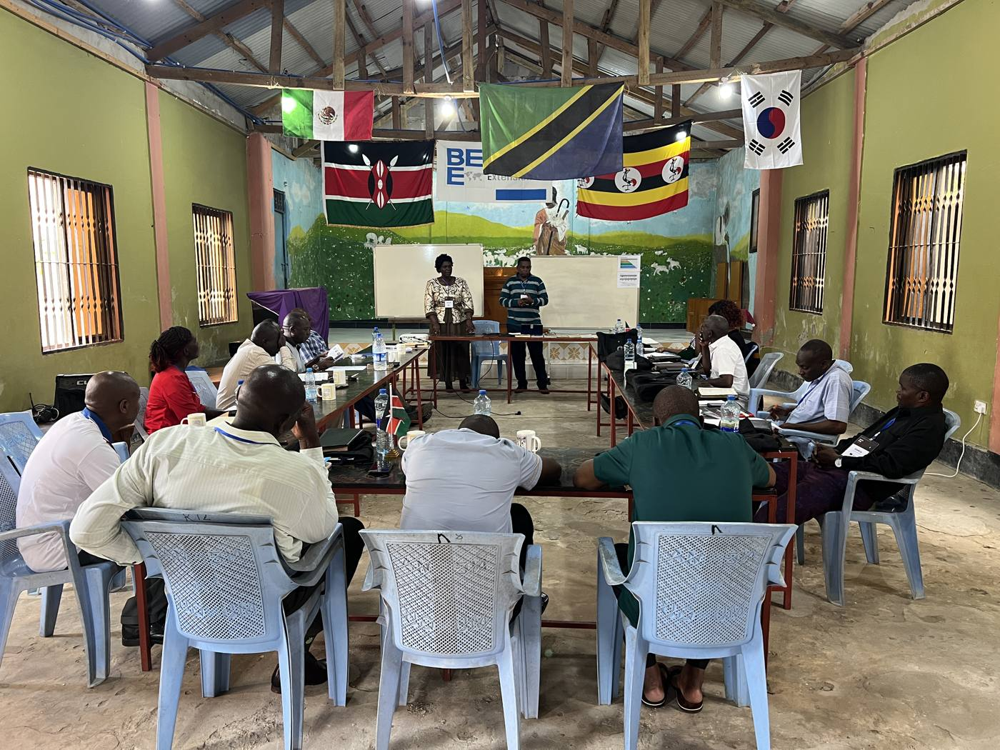
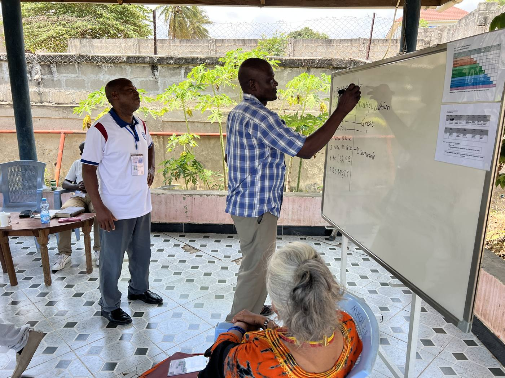
목요일에는 조를 나눠 서로 인도자와 학생이 되어 연습했습니다. 같은 과목 세미나가 여럿 열리자 엉뚱한 세미나에 신청하는 일이 생겼고, 수업 중에 신청 화면을 고쳐 바로 내보냈습니다. 현지에서 직접 써 보지 않았다면 몰랐을 문제였습니다.
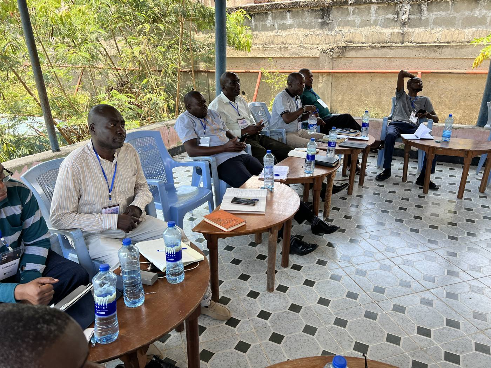
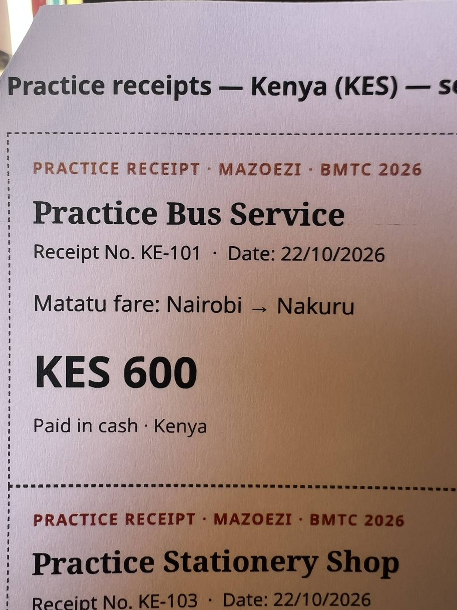
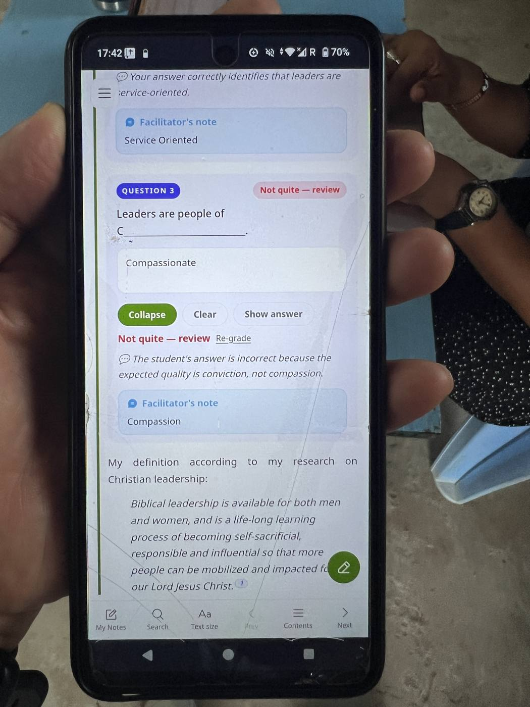
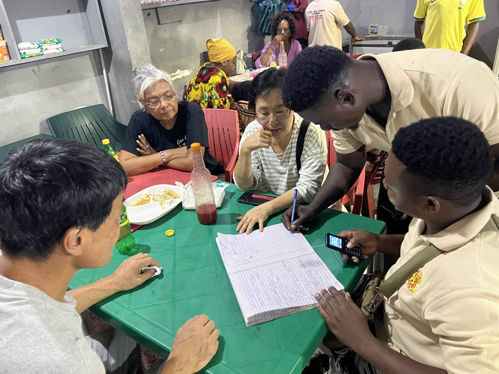
마지막 날은 최종 테스트였습니다. 「버스를 타고 교회에 가서 세 학생과 세미나를 하고 돌아온다」는 이야기를 따라, 경비를 적고 세미나를 열고 학생을 받고 출석·수강료·성적·종강까지 혼자 폰으로 해야 했습니다.
실수가 많았습니다. 그런데 그 실수가 가장 좋은 교재가 되었습니다. 다시 하는 대신 한 사람씩 「무엇이 잘못됐고, 어떻게 해야 하나」를 묻고 답했습니다. 버튼을 외우는 것보다 내가 지금 어디서, 누구의 일을, 무엇을 하는지 아는 것이 중요하다는 것을 함께 배웠습니다.
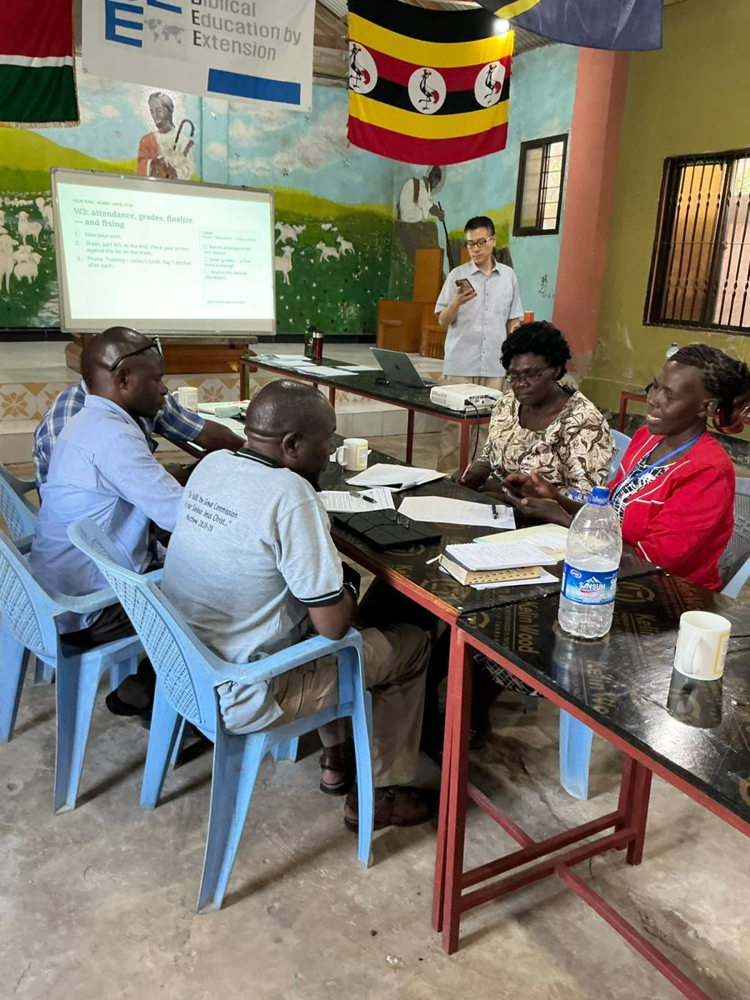
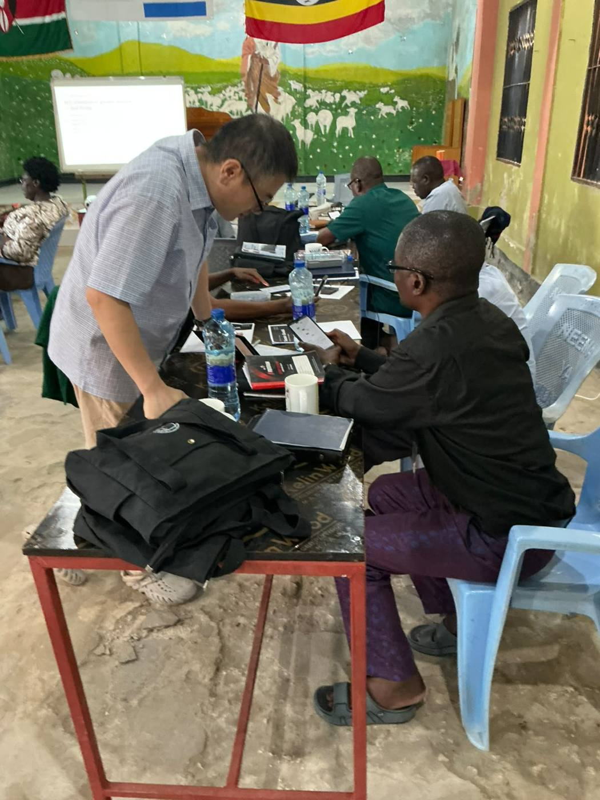
오후에는 일곱 파트로 된 최종 시험을 봤습니다. 첫 사람이 14:53에 마쳤고, 마지막 한 분이 17:43에 마쳤습니다. 열일곱 명 전원이 일곱 파트를 모두 통과했습니다. 스와힐리어를 쓰는 두 분은 탄자니아 동료가 옆에서 자기 말로 다시 설명해 주었습니다. 딤후 2:2 가 교실 안에서 이미 일어나고 있었습니다.
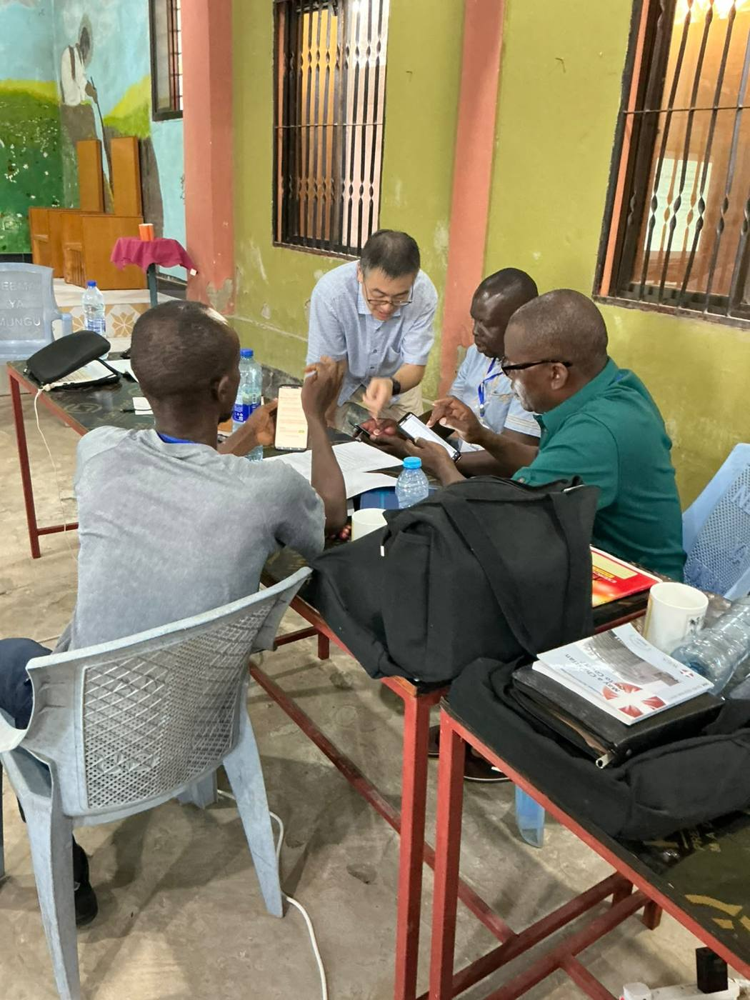
참가자들은 1월 말까지 세 가지를 약속했습니다. 자기 교회에서 진짜 세미나 하나를 Ministry Manager 로 운영해 영수증과 종강까지 마치는 것, 매달 보고를 올리는 것, 그리고 이번에 오지 못한 인도자 한 사람을 찾아 옆에 앉아 가르치는 것입니다.
BMTC 는 10월 말까지 다른 과목(섬기는 리더십, 세계 선교, 비전 등)으로 이어지고, 마치는 분들은 BEE 의 현지 사역자로 세워집니다.
열 명의 인도자가 각자 교회에서 첫 세미나를 열 때, 학생들이 자기 폰으로 신청하고 출석과 수강료가 그날 바로 기록되도록.
스와힐리어로 된 학습서와 안내가 현지 말로 다듬어지도록. 영어가 어려운 인도자들도 끝까지 혼자 할 수 있도록.
세 명의 인도자가 서로 짝이 되어 돕고, 먼 거리와 인터넷의 어려움 가운데서도 매달 보고가 끊기지 않도록.
현지 코디네이터(케냐·탄자니아 윤경환, 우간다 신경진)가 처음 들어오는 기록을 지혜롭게 확인하고 고쳐 주도록. 이번에 드러난 화면의 불편을 잘 고쳐 다음 인도자들이 더 쉽게 배우도록. 무엇보다 이 도구가 사람을 대신하는 것이 아니라 사람을 세우는 일에 쓰이도록.
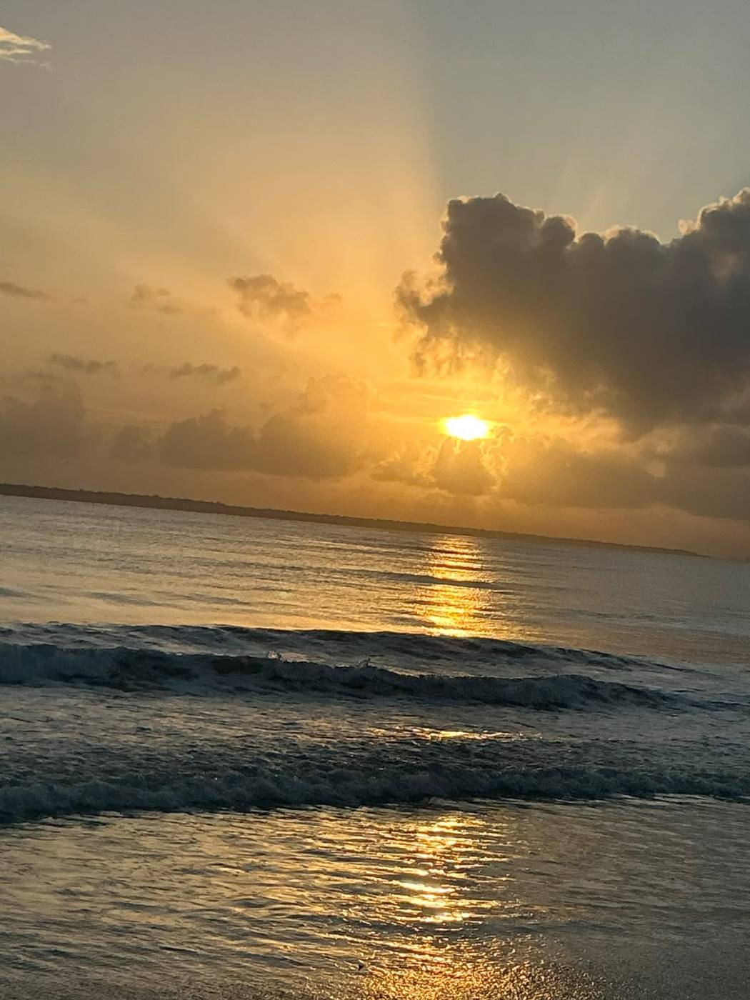
함께 준비해 주신 조문상 선교사님, BMTC 교장 Rachel R. 박사님, 현지에서 도와주신 모든 분, 그리고 멀리서 기도로 함께해 주신 여러분께 감사드립니다.
탄자니아 아루샤에서
권태남 드림 · BEE Korea
숫자는 2026년 10월 23일 Ministry Manager 기록에서 셌습니다 · 사진 BMTC 2026